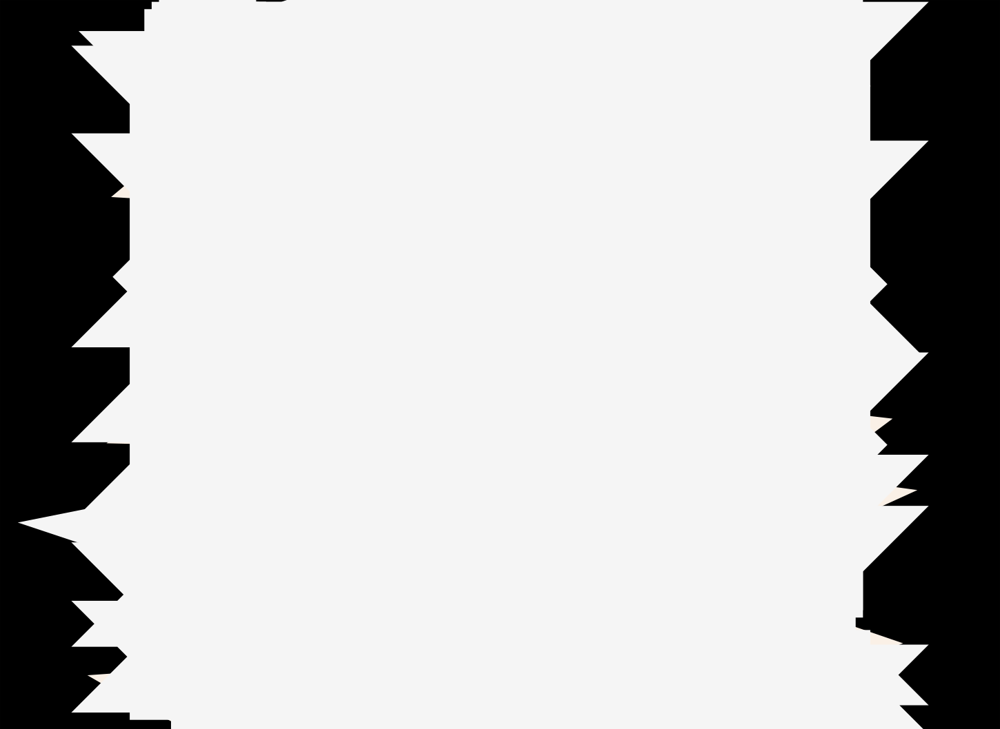
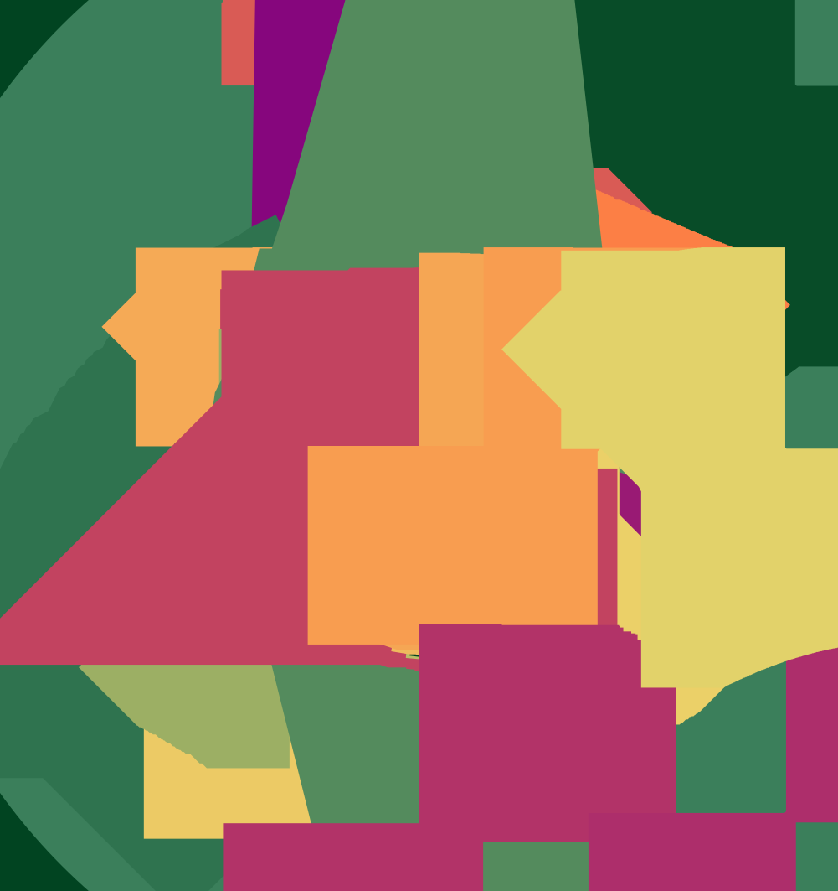
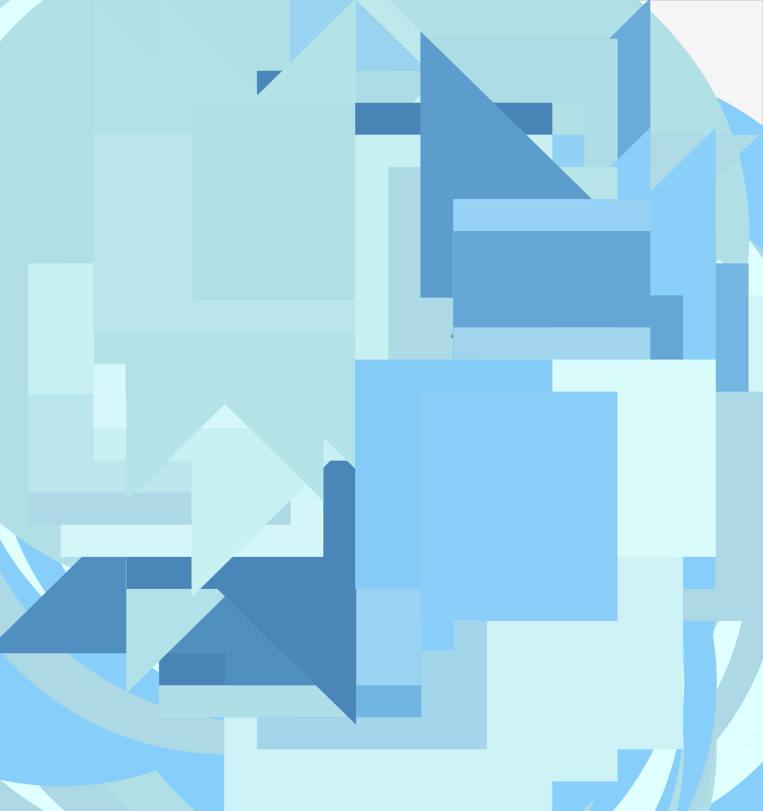

Visual Poetry Artist Questionnaire
is a symbolic acronym for Parametric Function Portraits.
The essence of the work is research as artistic practice rooted in mathematics. The specific question posed is whether beauty is fundamental or emergent. Can mathematics be inherently beautiful or is mathematical beauty a human construct — a filter percolating through social, cultural and cognitive structures?
The practical manifestation of the work is a formal system with a very constrained grammar and a set of rules, spanned by a serial map of the possible configurations. The system is defined as follows:
A parametric curve with the map .
The result of these rules is a mathematical poem following the simple, formal grammar defined above, e.g.:
shows a variation on familiar Lissajous figures. Here we use Feynman notation for the trigonometric functions, , , for brevity and elegance.
The map only generates a set of points, but we can make aesthetic choices on how these points are rendered and presented, generating a kind of formal portraiture of these constructs. A few more words and configuration and the forms start to become poetically and visually more interesting.

As we explore the mathematical properties of the map such as continuity, curvature, more and more of the inherent beauty is revealed. Since any attempt at exact representation is impossible, our choice of resolution is subject to chance, and can thus become a probe into the formal and aesthetic structure. Multiple views at different sampling densities of the same map are layered onto each other, revealing different aspects of the construct.
Following poetry to its linguistic origin, we get poiesis (creation out of nothing) or in this interpretation as projection of ideal forms.
I draw great inspiration from the philosophy of serialism, as introduced in music by Schoenberg and later elaborated in the visual arts by Sol LeWitt. The origins of contemporary generative practice can be traced back to these early XXth century ideas.
A very strong influence on my aesthetic and approach are formal musical notation and composition pioneered by Iannis Xenakis and Herbert Brün.
Aside from the randomness embedded in mapping the space of possible parametric configurations spanned by the formal rules adopted for the project, there is a fascinating naturally occuring chaos that emerges from the rules. Even though the trigonometric functions are periodic, because π and e are transcendental, even in the simplest configuration, periodicity is impossible to achieve. Moreover, as we start combining the operators in more complex configurations, naturally chaotic modes occur manifesting in bursts of discontinuity. As t traverses the linear input range, the plot explodes into a set of seemingly disconnected subpaths due to the chaotic natore of the modes.

The framing of the project as a long-form generative work allows for a kind of experimental mathematical aesthetics practiced by the audience.
